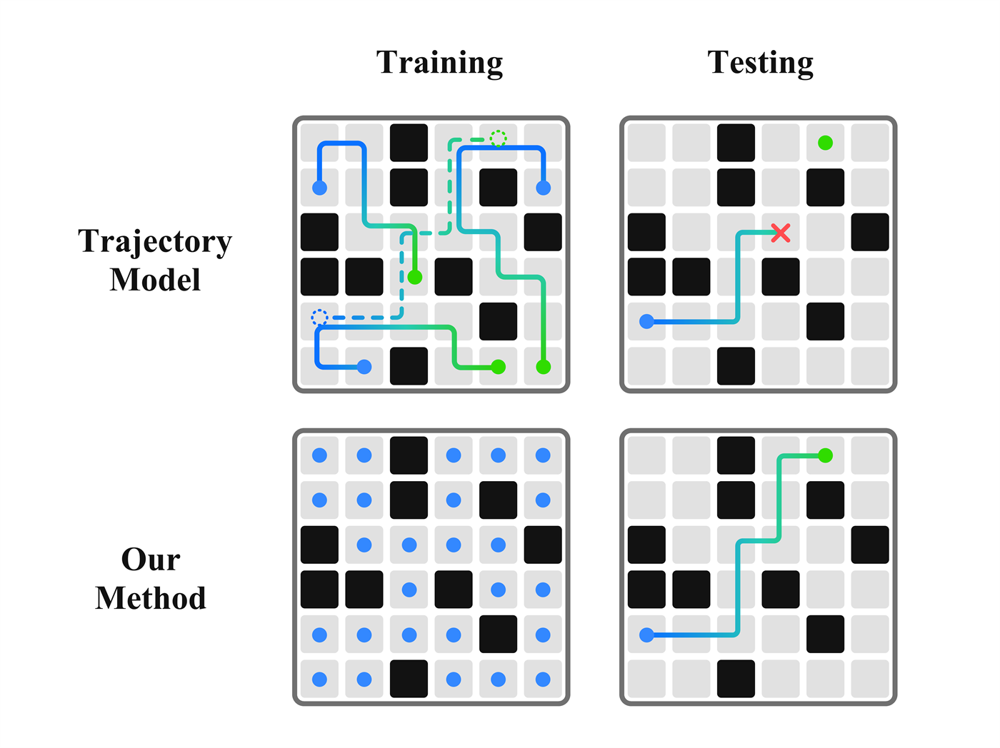
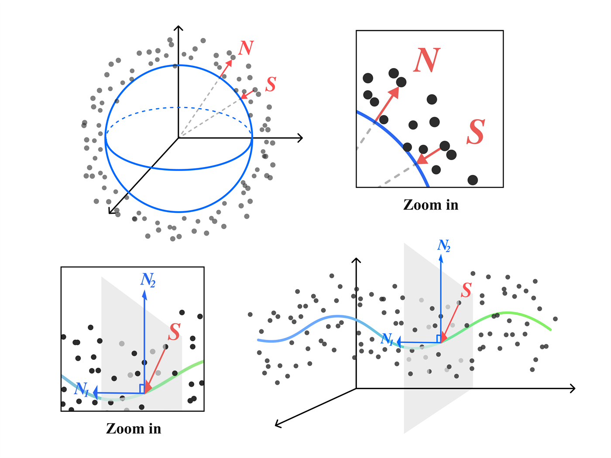
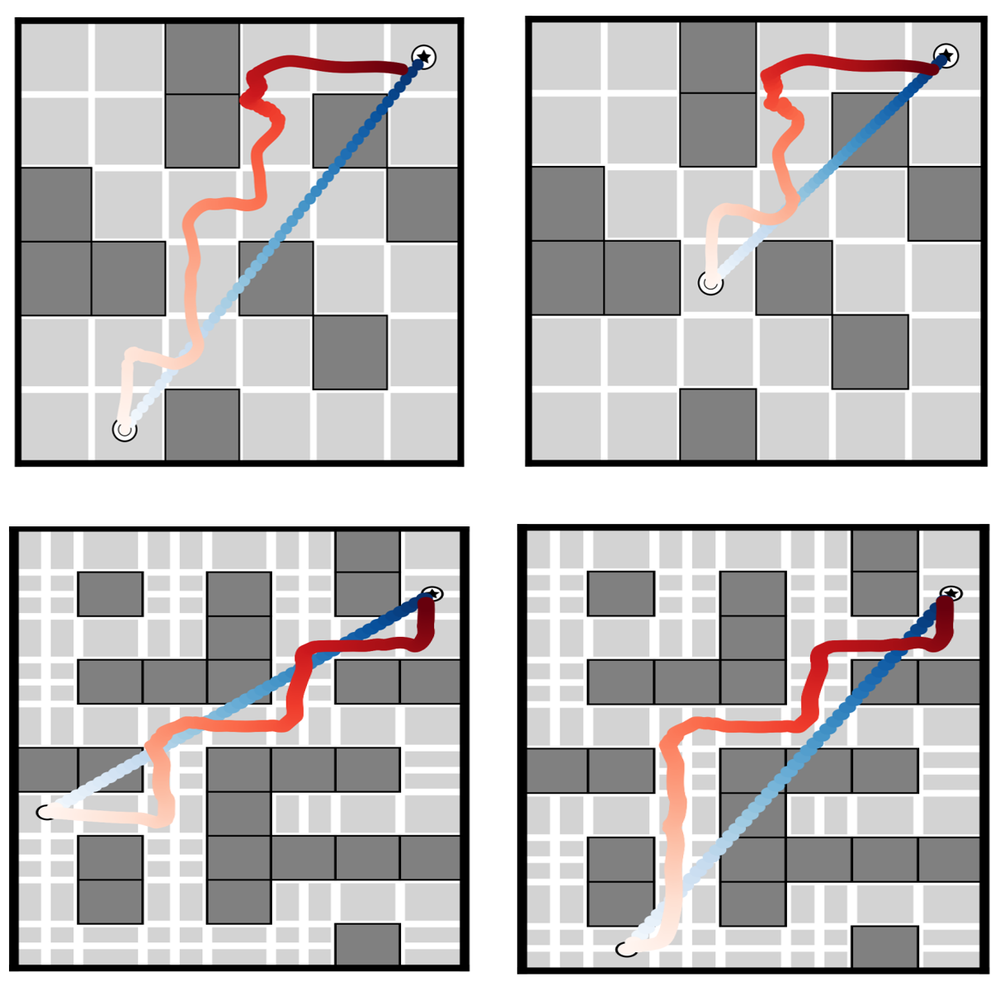
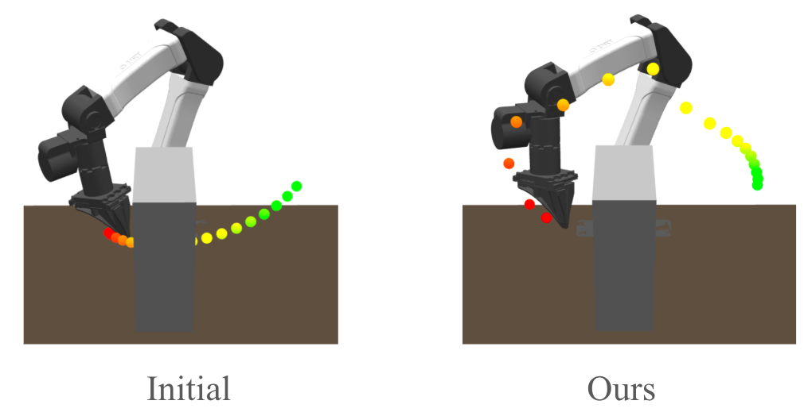
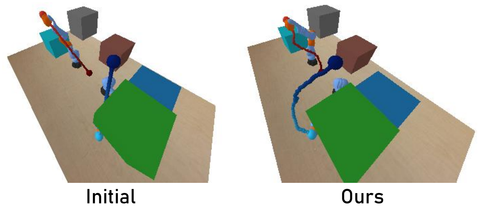

|
Trajectory planning from state-only data through learned manifold geometry. 1Carnegie Mellon University / 2National University of Singapore 3DEVCOM Army Research Laboratory / 4Harvard University |
|
 Trajectory planning has a comforting story: collect demonstrations, train a generative model over trajectories, then condition on a start and a goal to sample a path. This story has become increasingly compelling as diffusion and flow-based models have moved into robotics. A trajectory is just a sequence. A sequence can be denoised. A denoised sequence can become a plan. But there is a quiet fragility hiding inside this formulation: trajectories are not just data points. They are entire paths through a combinatorial space. Demonstrations can cover some paths, but they cannot cover all of them. This creates an odd failure mode. A robot may have seen the start. It may have seen the goal. It may even have seen most of the intermediate states required to solve the task. And yet a trajectory model can still fail because it never observed the exact path connecting them. Maybe the missing object is not the state space. Maybe the missing object is only the path through it. So the question is: Can we plan trajectories without trajectory data? TL;DRMost modern generative planners learn a distribution over trajectories. Here we ask a sharper question: can we do trajectory planning without trajectory data? Our answer is to train only on valid states, then recover trajectories using the learned geometry of those states. Missing trajectories does not mean missing states. This extends the manifold hypothesis from a descriptive idea into an operational one: if a generative model learns the valid-state manifold, we can probe its local geometry and plan on it. Trajectory planning can emerge from state-only data. From a scaling-law perspective, this is a statement about data utilization. Trajectory datasets often contain rich state coverage, but trajectory-level training may not use that structure fully. Learning geometry gives us another way to extract planning signal from the data we already have. We call the method Ariadne, after the mythological figure who gave Theseus a thread to navigate the Labyrinth. The learned state manifold is a kind of labyrinth, and the planner follows geometric cues through it to connect a start and a goal without being handed a demonstrated route. Ariadne uses geometric information from a generative model trained on state-only data. It moves toward the goal while repeatedly correcting motion back onto the learned manifold. We validate this in Maze2D, a 6D tabletop robot motion planning task, and a harder DualKUKA setting with two robot arms. Why Trajectory Learning StrugglesGenerative planning turns planning into conditional generation. A diffusion planner, for example, can denoise an entire trajectory sequence while enforcing a start state, goal state, or other task constraints. But this reframing changes what must be covered by data. If we learn a distribution over states, we need to know which configurations are valid. If we learn a distribution over trajectories, we need to know which ordered chains of configurations are valid. This is a much larger object. Imagine a maze. The free cells are states. A trajectory is a path through those cells. A dataset may reveal many valid states without revealing every route between them. A trajectory model can then fail on a new start-goal pairing even when the start, goal, and intermediate states are familiar. The same issue appears in robot motion planning. A tabletop robot arm may have many observed collision-free configurations, but demonstrations only sample some motions through them. This is the difference between state coverage and trajectory coverage. Trajectory coverage is hard because paths compose. Demonstrations inevitably reveal a tiny, biased subset of the feasible trajectory space. So when a trajectory model fails on an unseen start-goal pair, the failure may not mean the world is unfamiliar. It may mean the connection was unfamiliar. This is the motivating tension: the robot may know the places, but not the route. What if we stopped asking the model to learn routes? A Shift in PerspectiveOur conceptual move is simple but quite radical: Instead of learning the distribution of trajectories, learn the distribution of valid states. That is, train a generative model on feasible configurations: free maze positions, collision-free robot states, valid end-effector poses. The model is not told which state came before which. It only learns the shape of the feasible region. At first this sounds insufficient. Planning is about going somewhere. A bag of states has no arrows. It has no time. It has no transitions. But geometry carries more information than it first appears to. If valid states form a structured set, then the shape of that set tells us something about how motion should proceed. In a maze, the free space bends around walls. In robot motion planning, collision-free configurations form a complicated subset of the ambient configuration space. If a path is feasible, it should remain on or near this valid set. This is where the manifold intuition enters. A manifold is a space that may be globally curved or tangled, but locally looks simple. In robotics, the set of valid states can be thought of similarly: around any valid state, some directions keep you feasible, while others push you into collision or invalidity. Planning can then be reframed as: Find a curve from the start to the goal that stays on the learned manifold of valid states. The learned state distribution tells us what is valid. Its geometry tells us how to stay valid while moving. This is also different from latent interpolation. We are not learning a latent space and hoping that straight lines or geodesics in that latent space decode into feasible motions. Ariadne directly probes the geometry of the data manifold in state space: the local tangent and normal structure of valid states is what guides the planner. In that sense, we are pushing the manifold hypothesis one step further. The usual statement is existential: high-dimensional data often concentrates near a lower-dimensional manifold. Here we ask for something more operational: if a generative model has learned that manifold, can we extract enough of its local geometry to plan on it? Now the problem becomes constructive: how do we turn geometry into an actual path? How Geometry Becomes Planning
The method is easiest to understand with a toy picture: two points on a curved manifold, say an arc of a circle. The Euclidean straight line satisfies the endpoints, but it cuts through the interior and leaves the manifold. If the manifold represents valid states, this is an invalid plan. This is the basic tension: endpoints are easy, feasibility is hard. 1. Straight-Line Interpolation FailsThe most naive plan is linear interpolation: start at the initial state and move in a straight line to the goal. This satisfies the endpoints exactly, but ignores the shape of the feasible state space. In a maze, the line may go through a wall. In robot motion planning, it may put the arm through an obstacle. The straight line knows where to go, but not where it is allowed to be. 2. Move, Then ProjectA natural fix is: move a little toward the goal, then project back to the manifold. The reference direction gives global intent; projection enforces local feasibility. 3. Why Endpoint Constraints BreakBut projection changes the step. Part of the intended motion may be removed because it pointed off the manifold. The corrected step is feasible, but it may make less progress than expected. Over many steps, these small distortions accumulate. This creates a tradeoff between local feasibility and global endpoint satisfaction. Projection helps keep each point valid, but it can also distort the accumulated motion needed to arrive at the specified goal. A planner that only projects can become a very polite wanderer: always staying on the sidewalk, not always reaching the address. 4. Correction-Projection ODEAriadne addresses this with a correction-projection ODE. The important idea is the role of correction. Ariadne accounts for the progress lost during projection, so the path remains tied to the desired start-goal interpolation while still being pulled back onto the learned manifold. At each point, the planner asks: what direction should I move so that I both remain feasible and continue making progress toward the endpoint? The reference path supplies intent. The learned manifold supplies feasibility. The correction term keeps the two from drifting apart. Geometry From Generative ModelsSo far, we have assumed access to the manifold geometry. But the model is only trained on valid states. How does a generative model reveal geometry? The answer starts with the score function. For a diffusion or score-based model, the score points in the direction where data density increases. If you perturb a data point slightly off the valid set, the score often points back toward the data manifold. This gives a first-order notion of the manifold. If I am near the valid state manifold, the score tells me which direction is "back." But first-order information is not enough in general. Realistic state manifolds can be lower-dimensional and more complicated, with multiple independent directions that move off the manifold. To project correctly, we need the local normal space, not just one normal vector. This is why we go beyond the raw score.  The intuition is simple: the score gives a local arrow pointing back toward high-density states. But a single arrow is not enough to describe the shape of the manifold. By looking at how that arrow changes as we move slightly in different directions, the Jacobian or Hessian reveals which directions behave like off-manifold normals and which directions behave like on-manifold tangents. You do not need the full differential geometry to understand the algorithm. The generative model is doing two jobs:
That is what makes the state-only setting plausible. The model never observes trajectories, but it learns enough about the shape of the state space to support trajectory construction. Does It Actually Work?The empirical question is sharp: If we train only on valid states, can the planner generate feasible trajectories for new start-goal pairs? We evaluate this in three settings: Maze2D, YAM 6D, and DualKUKA. Across these settings, the model sees feasible states, not demonstrations. At test time, it receives a start-goal pair and constructs a path using the learned geometry. The results are best read visually first. Maze2DMaze2D is the cleanest setting for the idea. The valid states are positions in free space; the invalid states are walls. A straight line from start to goal often crosses obstacles, so the planner must bend around the maze structure.  The visual story is exactly what we want from the method. The straight reference path provides a crude global direction. Ariadne then warps this path along the learned state manifold, producing a route that follows free space rather than cutting through walls. It was not trained on maze trajectories that tell it how to connect locations. This is where the phrase "missing trajectories does not mean missing states" becomes operational. The path may be missing from the dataset, but the free-space structure still leaves a geometric trace. Quantitatively, the results show that a state-only model can produce feasible plans while using strictly less supervision than trajectory-trained planners. YAM 6DThe next setting increases the dimensionality and moves from toy navigation to robot motion planning. In YAM 6D, a 6-DoF robot arm operates in a tabletop workspace with obstacles. Training data consists only of collision-free states, with no trajectory data and no transition information. This is a more demanding test of the manifold view: the feasible set is hidden inside a higher-dimensional representation, and a straight interpolation can easily collide.  The qualitative result shows the planned path routing around obstacles while maintaining feasibility. DualKUKAThe DualKUKA environment pushes the idea further. Two 7-DoF robot arms must avoid obstacles and avoid colliding with each other, so feasibility is coupled across both arms.  We find that Ariadne achieves results comparable to trajectory-learning-based methods in this setting, while not training on trajectory data. The result shows that the geometry of valid states can serve as a useful planning substrate even in higher-dimensional robot motion planning. Bigger ImplicationsThe broader implication is that trajectory generation may not always require trajectory-level supervision. If valid state coverage is easier to obtain than expert demonstrations, then state-only learning gives us a weaker-data route to planning: learn the space first, then recover paths from its geometry. This suggests a different perspective on scaling laws for trajectory learning. A common response to poor generalization is to collect more trajectories: more demonstrations, longer rollouts, broader offline datasets. But the trajectories we already collect often contain far more state coverage than trajectory-level training fully uses. The bottleneck may not only be data quantity; it may also be data utilization. By learning the geometry of the valid-state distribution, Ariadne tries to use the structure already present in the data more efficiently. Instead of treating each trajectory as one supervised sequence, we can ask what manifold of feasible states those trajectories reveal, and how much planning behavior can be recovered from that structure. LimitationsThe most credible version of this idea comes with boundaries. Ariadne plans feasible state sequences; it does not learn full transition dynamics. Contacts, underactuation, torque limits, velocity constraints, and dynamic stability can all matter in real robots. The approach also depends on the quality of geometry estimation. If the generative model learns a poor state distribution, or if the score/Jacobian/Hessian signals are noisy, the projection can become unreliable. The method also depends on the reference path used during construction. In our experiments, a straight-line reference is often sufficient, but more complex settings may benefit from other parameterizations or imperfect trajectories from another planner. ResourcesFull Paper: Trajectory Planning without Trajectory Data: A Manifold-Guided Approach → Citation: The broader lesson is simple: for trajectory planning, trajectory data may not be the only path to trajectory generation. If valid states already reveal the geometry of the task, then better data utilization can turn state coverage into motion. Scaling planning systems may therefore depend not only on collecting more trajectories, but also on learning how to read more structure from the data we already have. |